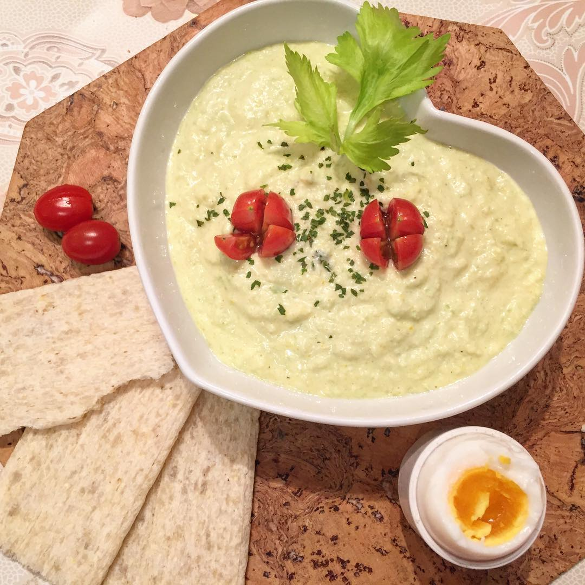

Zelerová nátierka podľa @rommiemax — Normy Jedál
Dnes večeriam úžasnú nátierku🥗 všade vidím zeler sem-zeler tam tak som si povedala že by to chcelo nátierku je mňamková👌😍 s ryžovími chlebíkami😋💕 #dnesjem #dnesjemzdravo
Recept↙️
4stonky zeleru, 2vajcia uvarené na tvrdo, 2pl olivový olej, 1pl dijonska horčica/obyčajná plnotučna, 2stručiky cesnaku, 1/2 cream cheese light, soľ korenie
🥣Zeler rozmixujeme v mixeri do toho nastruhame cesnak na jemno a pridávame ostatne ingrediencie a zmixujeme. Može sa odložiť ešte do chladničky trochu stuhne. Dobru chuť 👌
#dnesvecerim #dnesveceriam #mojejedlo #uzasnejedlo #ryzovechlebiky #foodies #nebickovpapulke #stonkovyzeler #zeler #zelerovanatierka #rommiemaxrecepty #foodporn #dnesjeme #healhyfood #zdravejedlo #healthyfood #vkuchyni #ricebread #celery #jemshashtagom #vecera #vecere